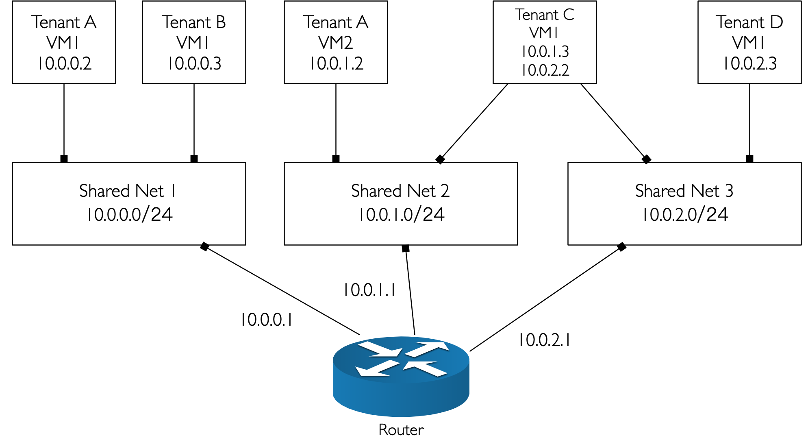
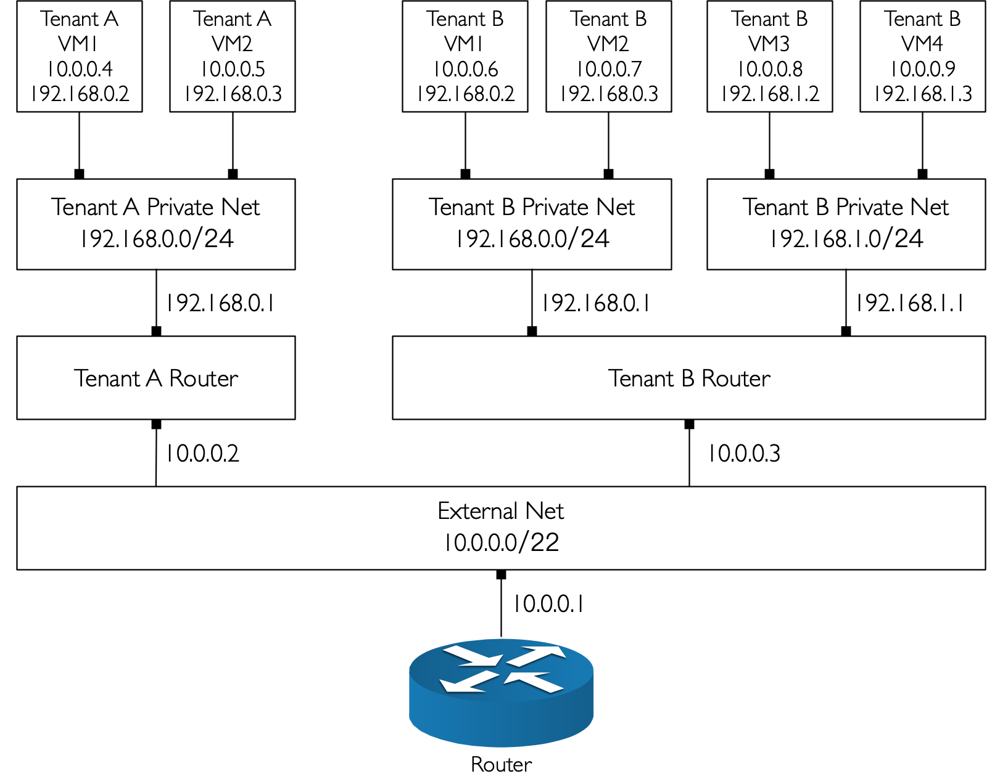

由于云环境的网络要求和复杂度不同，要求Neutron能够灵活支持多种租户网络拓扑结构，如Vlan网络，大二层网络或者混合网络等。
目录
Neutron支持一下5种网络拓扑。
- 单一平面网络。
- 多平面网络。
- 混合平面私有网络。
- 通过私有网络实现运行商路由功能。
- 通过私有网络实现每个租户创建自己专属的网络区段。
在一个典型的生产环境中，我们一般将网络分为以下几种：
- 公共网络，即外网网络。
- 管理网络，即OpenStack自身组件所使用的网络，通常为管理组件之间通信所使用的网络。
- 服务网络，即虚拟机所使用的内网网络。
- 存储网络，存储专用网络，一般和管理网络同网段。
单一平面网络
单一平面网络是指所有的租户共享一个相同的服务网络和公共网络，意味着一个租户下的虚拟机能够访问其他租户下的虚拟机，隔离性不好。
多平面网络
多平面网络虽然也是服务网络与公共网络相同，但是可以有多个共享网络，当两个虚拟机需要相互通信时，虚拟机内部可以通过多网卡同时共享一个网段。这些共享网络是对所有租户共享的。

混合平面私有网络
混合平面私有网络是指每个租户拥有自己的服务网络，同时共享相同的公共网络。
通过私有网络实现运营商路由功能
通过私有网络实现运营商路由功能，是指每个租户拥有自己的服务网络，并且虚拟机可以直接通过提供商路由所提供的SNAT功能，访问外部网络命名空间。
通过私有网络实现每个租户创建自己专属的网络区段
通过私有网络实现每个租户创建自己专属的网络区段，支持命名空间功能，每个网络可以选择拥有自己独立的提供商路由——一般来讲是虚拟路由。
